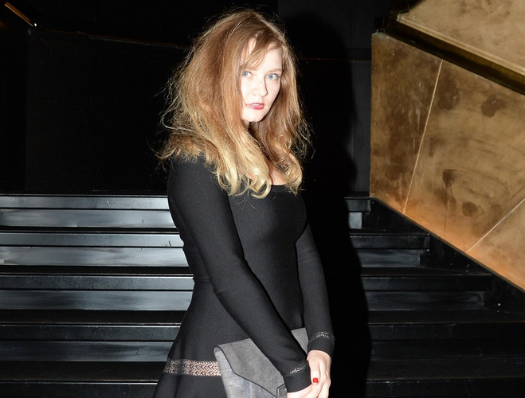
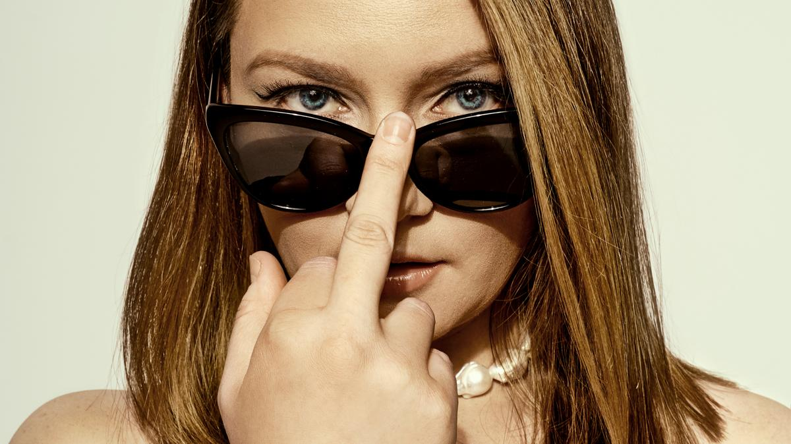
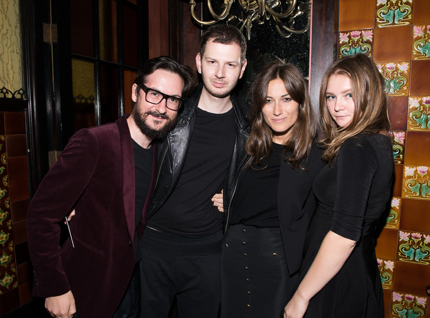

Удивительной кажется история русской девушки Анны Сорокиной, получившей вполне реальный срок за то, что под выдуманной фамилией Делви выдавала себя за наследницу немецкого миллионера.
Ей удавалось делать это на протяжении нескольких лет, попутно обманывая случайных знакомых, банки и отели. Невероятным образом она получала кредиты, которые не собиралась погашать, жила в люксовых номерах фактически бесплатно и организовывала вечеринки с локальными инфлюенсерами за чужой счет. После, когда правда все-таки вылезла наружу, очевидцы признавались, что видели в поведении Анны что-то странное: да, она носила брендовые вещи, вроде платьев Balenciaga, разбиралась в винах и дружила с влиятельными людьми, но была по-старомодному высокомерной и неприветливой, в каких-то моментах казалась зажатой, словно вся эта роскошная жизнь ей на самом деле не принадлежит. Несмотря на это, поверить в реальную историю, которая стояла за выдумками Анны Сорокиной-Делви, для многих оказалось слишком сложно.
Откуда корни растут
Родилась Анна в подмосковном Домодедово в семье отнюдь не миллионеров. В 2007 году она переехала с родителями в Германию. Тогда ей было 16 — школу пришлось оканчивать, одновременно приспосабливаясь к новому коллективу, языку и стране. Отец Анны, Вадим Сорокин, в это время обеспечивал семье достойное существование, работая в транспортной компании. По некоторым данным, предприятие вскоре прогорело.
В 19 лет, как пишет The New York Times, Анна переехала в Париж, чтобы получить образование в сфере дизайна. Там же она начала представляться под фамилией Делви — в суде Анна утверждала, что это второе имя ее матери, что, скорее всего, тоже неправда — по крайней мере, в этом уверен ее юрист. В Париже девушка параллельно с учебой начала заниматься съемками, устроилась интерном в глянцевый журнал Purple и начала получать первые деньги — 400 евро в месяц. Этого для жизни в крупной европейской столице было недостаточно, особенно с большими амбициями и ожиданиями. Некоторое время Анне помогали родители, высылали деньги на квартиру и карманные расходы. В 2013 году Сорокина приехала в Нью-Йорк на Неделю моды, не рассчитывая остаться там надолго. Однако закрутилось: она получила возможность поработать в местном офисе Purple, познакомилась с интересными и полезными в перспективе людьми. От новых знакомых начали поступать приглашения в самое сердце светской жизни. Вскоре Анна забросила и учебу, и работу — необходимость в них отпала сама собой. Родился план, как жить красиво, минуя необходимость ходить в офис.
Тайна Анны
В Нью-Йорке Сорокина сосредоточилась на нетворкинге. Одной из ее случайных знакомых стала диджей Эль Ди, потом описавшая опыт общения с мошенницей BBC. Впервые девушки встретились в мае 2014 года в отеле Surf Lodge в Монтоке. Анну и Эль Ди познакомил клубный промоутер Томми Салех — тот попросил ее взять девушку, представившуюся дочерью миллионера из Германии, переночевать к себе в номер. Эль Ди отказала — новая знакомая показалась ей хмурой и даже грубой — и на следующее утро обнаружила Сорокину-Делви спящей на парковке на заднем сиденье автомобиля. «Анне нужны друзья», — убеждал Эль Ди Томми. Пришлось пойти навстречу. Несколько раз диджей неохотно принимала от Сорокиной приглашения на вечеринки и случайно пересекалась с ней на мероприятиях в Нью-Йорке. «Все говорило о том, что она всеми силами пытается стать своей на Манхэттене», — сейчас оценивает Эль Ди. В последний раз с Анной она встретилась в Париже — в одном из отелей дочь миллионера устраивала небольшой прием с дорогими и любимыми во всей французской столице напитками. На следующее утро Сорокина-Делви неожиданно позвонила и попросила взаймы 35 тысяч евро — мол, ее карточка заблокирована, а персонал гостиницы весьма недоброжелательно просит погасить счет за разливавшееся накануне игристое. Эль Ди на уловку не купилась и больше с Анной не общалась.
Другим повезло гораздо меньше. В 2018 году в Vanity Fair вышла статья фоторедактора журнала Рэйчел Делоуч Уильямс, которая рассказала, как в буквальном смысле была околдована Анной и ее образом жизни. «Она появилась в моей жизни в босоножках Gucci и очках Céline, показала безупречный мир отелей, ужинов в Le Coucou, инфракрасных саун и курортов Марокко. А после этого сделала меня беднее на 62 тысячи долларов» — с таких слов начала свой рассказ Рэйчел. С Анной она познакомилась уже в зените аферы — в 2016 году. К тому времени Сорокина успела примелькаться на Манхэттене, ее тактика появляться на всех заметных вечеринках и улыбаться любому доступному фотографу работала весьма успешно. Благодаря ей у Анны был инстаграм-аккаунт с на тот момент 40 тысячами подписчиков (сейчас их больше 70 тысяч).
Рэйчел и Анна начали эпизодически встречаться, ужинать в компаниях и ходить на вечеринки. Как-то в разговоре Сорокина-Делви упомянула, что хочет открыть частный арт-клуб — некий центр, посвященный современному искусству. Его же Анна впоследствии упомянет уже в суде, оправдываясь за фальсификацию банковских документов, с помощью которых пыталась доказать наличие крупных счетов за рубежом и получить кредиты (самый большой — $22 миллиона). В погоне за мечтой Сорокина искала инвесторов и даже умудрилась заручиться поддержкой известных и очень опытных юристов. Например, Джоэла Коэна, который расследовал мошенничества героя фильма «Волк с Уолл-стрит» Джордана Белфорта. В случае с Анной Коэн не сразу заподозрил неладное.
В мае 2017 года Рэйчел получила от «мисс Делви» приглашение отдохнуть вместе в Марокко. На него Уильямс ответила утвердительно с большой радостью: «Мир казался зачарованным, когда она была рядом, словно привычные правила не работали». Анна сама выбрала отель La Mamounia, один из лучших в стране, и пообещала подруге возместить все расходы за перелет и проживание — но чуть позже. Не чувствуя подвоха, Рэйчел ввела данные личной карты при бронировании авиабилетов. Обычное дело, подумала она.
Первые дни в отеле были чудесными — Анна и Рэйчел наслаждались личным бассейном, дорогим вином и фруктами. Они ездили на фотосъемки и делали дорогие покупки. В какой-то момент карту Сорокиной-Делви перестали принимать в бутиках. Рэйчел пришлось взять на себя сначала лишь часть платежей, а потом и всю сумму за проживание в гостинице. Общий долг оказался намного больше, чем фоторедактор могла заработать за год. Деньги Анна Делви, несмотря на обещания, так и не вернула. Вскоре Рэйчел узнала, что девушке предъявлены обвинения в мошенничестве и крупных денежных хищениях.
Отнюдь не золотая клетка
Анну Сорокину арестовали в июле 2017 года. Схема, которой она успешно пользовалась несколько лет, оформляя кредиты по поддельным документам и занимая деньги, начала давать сбой. Обманутые люди, а также представители отелей Beekman и W New York, в которых Анна так и не погасила чеки на тысячи долларов, привлекли полицию, чтобы вернуть средства. Известно, что перед началом судебных слушаний Сорокиной была предложена сделка, по условиям которой она должна была отсидеть в тюрьме от трех до девяти лет. Девушка отказалась, надеясь на жалость присяжных. Уже в суде против бывшей подруги давала показания Рэйчел Уильямс, однако по этому эпизоду Сорокина была признана невиновной.
В мае 2019 года Анну приговорили к тюремному заключению сроком от 4 до 12 лет, а также вынесли ей предписание выплатить долги — $199 тысяч — и штраф размером $24 тысячи. В октябре 2020 года стало известно, что Анна получила право выйти из тюрьмы досрочно. На свободе она оказалась в феврале 2021-гo.
Невероятно деятельная Сорокина и в тюрьме времени не теряла. Она начала писать мемуары, видимо, желая заработать или прославиться. Во втором, впрочем, она вряд ли нуждается. После освобождения Анна хочет изучать право и основать инвестиционный фонд. «Не знаю, насколько реалистичны ее бизнес-идеи, но уверен, про Анну мы еще услышим не раз. Она точно способна на многое», — сказал ее юрист The New York Times. Его слова сразу стали пророческими, ведь Netflix сняли сериал «Изобретая Анну», который основан на журналистском расследовании о приключениях Сорокиной в Нью-Йорке. Возглавляет проект продюсер Шонда Раймс.